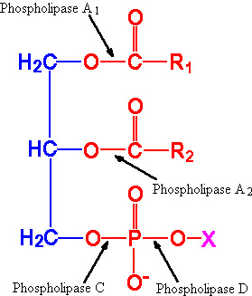

BIC 101 :: Lecture 25 :: LIPASES AND PHOSPHOLIPASES

Lipids constitute one of the four major classes of compounds that are found in living systems. The lipids of metabolic significance include triacylglycerol, phospholipids and the products of lipid metabolism such as free fatty acids and glycerol.
Lipases
- Triacylglycerols or triglycerides undergo hydrolysis by lipases to form glycerol and fatty acids, which undergo further oxidation generating energy.
- Lipases have been reported to be present in dry seeds of some species, e.g. castor bean, Scots pine and Douglas fir but at a low level, or absent in others e.g. apple.
- In most cases of seeds, following imbibitions, there appears to be a rise in lipase activity but whether this increase is due to the de novo synthesis of the enzyme or activation of existing lipases has not been determined.
- A decline in lipase activity is always associated with decline in acylglycerol reserves.
- In castor bean, as in many other fat‑storing seeds, free fatty acids do not accumulate, but are rapidly degraded and converted to carbohydrate within the endosperm.
- In other seeds such as germinating seeds of oil palm (Elaeis guineensis), a different pattern of fat mobilization can be observed.
- The products of lipid catabolism are transported via specialized structures called haustorium through its vascular system.
- Lipases are generally non‑specific and can hydrolyse a wide variety of triacylglycerols
- They initiate digestion by hydrolyzing triacylglycerols to form free fatty acids and 1,2‑diacylglycerols.
- Complete hydrolysis of triacylglycerols produces glycerol and fatty acids.
- Lipase hydrolyses easily the terminal fatty acids to produce 2‑monoacyl glycerol as major
Phospholipases
- Phospholipases are the hydrolytic enzymes acting on phospholipids and splitting into different products.
- There are four types of phospholipases known as phospholipase A1, phospholipase A2 or B1, phospholipase C and phospholipase D.

Phospholipase A
- Phospholipase A is present in large amounts in snake venom and human pancreas.
- It is also designated as phospholipase A1.
- It catalyses the hydrolysis of the fatty acids in the 2 or -position of the phospholipids.
- Though this enzyme attacks on glycerophosphatides, it is fairly specific for phosphatidyl choline (lecithin).
- The enzyme is relatively stable to heat (below pH 7.0).
- The product of the hydrolysis, a lysolecithin, (monoacylphosphoryl choline) has a powerful hemolytic activity.
Phospholipase B (A2)
- It is otherwise termed as lysophospholipase and widely distributed in nature often in association with phospholipase A.
- Phospholipase B is also designated as phospholipase A2 since it acts on the lysolecithin (the product obtained from phospholipid by the action of phospholipase A1).
- The action of this enzyme following that of phospholipase A yields glycerophosphorylcholine as the final product.
Phospholipase C
- Phospholipase C is mostly found in the plant kingdom but it may also be present in some animal tissues and venoms.
- It catalyses the liberation of a 1,2‑diacylglycerol and phosphorylcholine from phosphatidylcholine.
- Phosphorylcholine is also liberated from sphingomyelin by this enzyme.
Phospholipase D
- Phospholipase D, an enzyme described mainly in plants catalyses the hydrolysis of choline from phosphatidylcholine leaving phosphatidic acid.
| Download this lecture as PDF here |